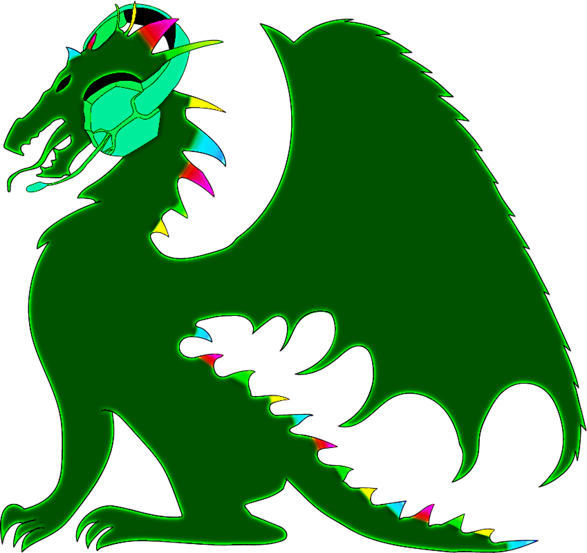

[ sistema_activo :: v2026 ]

Técnica en Ciberseguridad e Infraestructuras · Análisis Forense · Bastionado · Pentesting · Creadora 3D
Soy Marina, técnica en Administración de Sistemas (ASIR) con especialización en Ciberseguridad en ETI. Mi PFC obtuvo Mención de Honor — una infraestructura corporativa resiliente diseñada con tolerancia a fallos desde cero.
Mi formación previa en Animación 3D me aporta una visión analítica diferencial: abordo la mitigación de riesgos de forma creativa y lateral, donde otros solo ven un checklist.
Me apasiona entender cómo quiebran las infraestructuras para construir defensas robustas — desde el triaje forense hasta el hardening, las auditorías y el desarrollo seguro.
Diseño e implementación completa de infraestructura empresarial: Active Directory, pfSense con DMZ doble firewall, VLANs segmentadas, servidor VPN, monitorización y alta disponibilidad.
→ Ver caso completoDoble firewall, segmentación VLAN, monitorización con The Dude+Telegram, mitigación de ataques ARP/MAC/DoS, VPN WireGuard y hardening según CIS/NIST.
→ Ver caso completoProxy transparente con caché, listas negras/blancas, restricción horaria, autenticación básica, redirección forzosa con MikroTik/iptables y logs centralizados en Wazuh.
→ Ver caso completoAnálisis de riesgos (MAGERIT), Plan Director de Seguridad con 20 medidas priorizadas, simulación de ataques (SSH, Joomla, AD), correlación de eventos y playbooks de respuesta.
→ Ver caso completoDetección de protocolos inseguros (Telnet/HTTP), fugas de información CDP/LLDP, inestabilidad STP y riesgos de ICMP Redirect. Incluye medidas de hardening.
→ Ver caso completoParches (WSUS), reducción de servicios, firewall, líneas base CIS, BitLocker + EFS, arranque seguro (ELAM, Credential Guard, UAC), BIOS/UEFI y políticas de contraseñas.
→ Ver caso completoSSH con certificados + 2FA, fail2ban, AppArmor, cifrado LUKS con desbloqueo remoto, auditoría Lynis (hardening index 58→66) y políticas de contraseñas CIS/NIST.
→ Ver caso completoSistema de backups cifrados, programados y con almacenamiento local (2 discos) + nube (Google Drive). Políticas según INCIBE, pruebas de restauración y regla 3-2-1.
→ Ver caso completoCentralización de logs, detección de intrusiones en red, reglas personalizadas de bloqueo (DoS, fuerza bruta) y correlación de eventos con dashboards interactivos.
→ Ver caso completoCA Raíz + Intermedia con Easy-RSA, certificados para servicios web (HTTPS + OCSP), y red WPA2-Enterprise con FreeRADIUS + OpenLDAP para autenticación centralizada.
→ Ver caso completoVideojuego 2D de aventuras creado desde cero en Unity. Sprites originales en pixel art, programación íntegra en C#, GDD completo y demo jugable. PFC del ciclo de Animación 3D.
→ Ver caso completoOSINT, fingerprinting con Nmap, análisis de vulnerabilidades (OpenVAS/Nessus), explotación con Metasploit (EternalBlue, Icecast, ProFTPD), MITM (ARP spoofing, SSL Strip), escalada de privilegios Linux/Windows, Active Directory con BloodHound y SMB Relay.
→ Ver caso completoIDOR, Path Traversal, LFI/RFI, XSS, CSRF, SQLi (UNION, blind, time-based), SQLMap, pivoting y máquinas CTF (SHOP, Badbyte, exámenes).
→ Ver caso completoWPA2 handshake (cracking con crunch/rockyou), Evil Twin + portal cautivo con Airgeddon, hardware LilyGo T-Embed CC1101 Plus, y fundamentos de Bluetooth Low Energy (BLE).
→ Ver caso completoBorrado seguro con SDelete, recuperación con Recuva, cracking de hashes (hashcat, John), geolocalización por metadatos (exiftool, Google Lens) y esteganografía básica (detección de PNG oculto en BMP).
→ Ver caso completoVolcado de memoria (FTK, DumpIt, Winpmem), adquisición de discos (dd, dc3dd, Guymager, FTK), clonadora hardware TD2u y triaje DFIR (CyLR, FastIR, Wintriage). Formatos RAW/EWF, cadena de custodia.
→ Ver caso completoAnálisis de imagen FAT16 mit The Sleuth Kit (TSK), recuperación de archivos borrados con PhotoRec, extracción de metadatos EXIF (ExifTool), timeline forense y elaboración de informe pericial judicial.
→ Ver caso completoAnálisis de imágenes de disco (.ad1, .E01) con Autopsy: recuperación de archivos borrados, historial web, correos (Thunderbird), dispositivos USB, volcado de hashes SAM con Mimikatz y elaboración de informes periciales (AfricanFalls, Lone Wolf, Richard Warner).
→ Ver caso completoAnálisis Android (ALEAPP), iOS (iLEAPP), Chromebook (cLEAPP) y Google Takeout (RLEAPP). 66 preguntas resueltas sobre SMS, TikTok, geocaching, GPS, llamadas, Discord, Bitmoji, Gemini, correos, hashes WSL y más.
→ Ver caso completoAnálisis de vulnerabilidades OWASP, corrección de código, SAST con Bandit, Dockerfile seguro, pipeline CI/CD con gatekeeping, DevSecOps, evaluación de riesgos y seguridad en apps móviles.
→ Ver caso completoMe mueve la curiosidad técnica y el desafío de entender los sistemas desde dentro para hacerlos más robustos. Formada para trabajar en equipo en entornos SOC, auditorías e infraestructura, e investigo por cuenta propia en CTFs y plataformas de hacking ético. Si buscas a alguien con criterio técnico, hambre de aprender y ganas de aportar desde el primer día:
[ cada vulnerabilidad encontrada es una defensa construida ]
→ Lanza el reto